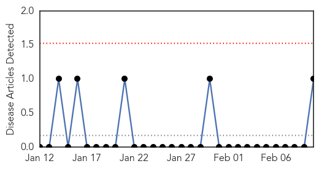
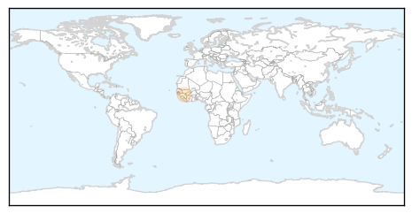
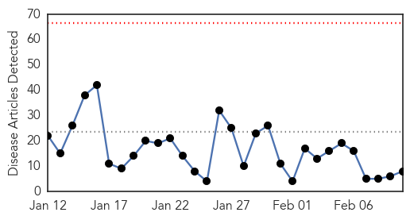
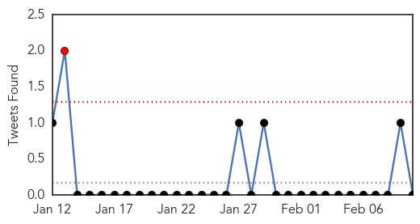
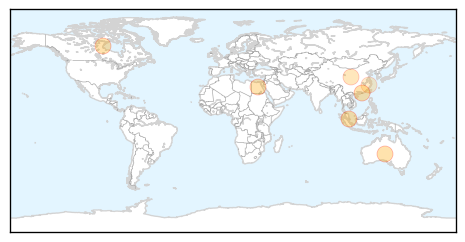
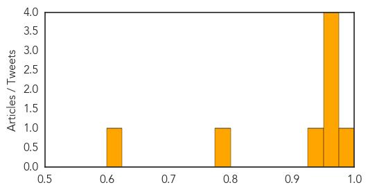

Hemmorhagic Fever
30-Day Web Trend
0 alerts, 0 warnings

30-Day Twitter Trend
0 alerts, 0 warnings

Article Locations
Article Confidences

Top Articles:
Top Tweets:
-
No tweets found for Feb 10, 2015
Influenza
30-Day Web Trend
0 alerts, 0 warnings

30-Day Twitter Trend
1 alerts, 0 warnings

Article Locations
Article Confidences
Top Articles:
- 0.997
- Flu outbreak in Hong Kong: 6 things you need to know about flu vaccination, Health News & Top Stories
- 0.970
- Winter death toll is highest for 15 years after millions are given useless flu jab
- 0.962
- Hong Kong medical facilities under strain amid flu outbreak, Others news, Health News, AsiaOne YourHealth
- 0.958
- Sixteen patients sick in three outbreaks
- 0.958
- Flu outbreak protocols at WRH could be lifted by Friday
- 0.932
- Avian Flu Scan for Feb 10, 2015
- 0.782
- China reports 3rd human H5N6 avian influenza case
- 0.624
- 21 H7N9 human cases in Zhejiang province
Top Tweets:
-
No tweets found for Feb 10, 2015